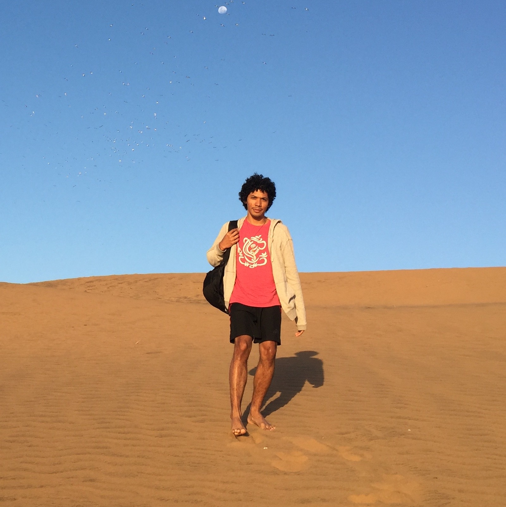
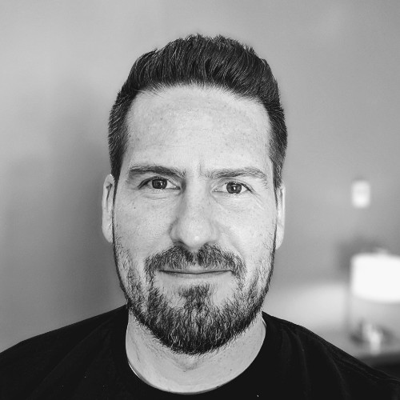
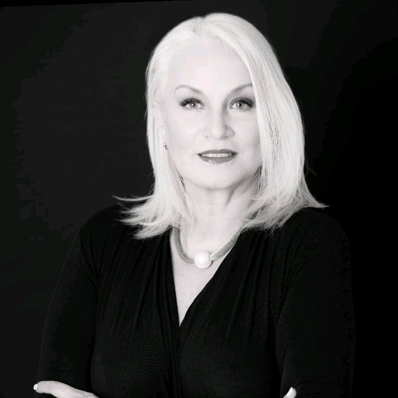

About
I'm Software Engineer travelling around the world, 12 years ago I've wrote my first line of code in JavaScript, since then I've been involved in many software projects, each project more exciting and challenging than the other. On the road I've done many friends, I've learned many lessons and achieved many goals. Below some details of my career.
Experience
1
The Entrepreneurial Adventure
May 2019 - Present (San José, Costa Rica)
Entrepreneur & Product Manager
After all these years in the industry I've decided to take a sabbatical year to rest, learn, unlearn and work on personal ideas. At the beginning of this period I've created a health magazine called La Candidieta in order to help people in Latin America suffering from a complicated condition called candidiasis.
Furthermore I've created a company called Tripping Cats. We are currently developing a community management platform that promises a revolution in the way people interact in their neighborhoods. The first version of this software will be released on January 2020. The Team and I are excited about it.
2
Eleven Systems, LLC
Feb 2015 - May 2019 (Mill Valley, California)
Senior Software Engineer
Eleven Systems develops web-based and iOS mobile software that focuses on two main areas. The first is Family Office software, which allows ultra-high net worth customers to manage the complex mix of assets and investments that they control. Eleven Systems works with Jetson Systems (experts in high end home automation and control systems) as part of Grassy Creek to produce the Personal Life Manager. Personal Life Manager includes features to manage properties, financial assets, inventory, alternative investments, a private communication platform, and much more.
On Eleven Systems I was in charge of creating the fundamentals of the user interface architecture for many web applications, in addition to implementing the security layer in each one, their build process, shared components logic, code organization and UI, in my last stage I also worked on applications for iOS (iPad & iPhone) using Swift and creating communication bridges between web and mobile applications.
3
Alinean, Inc.
Nov 2013 - Feb 2015 (Orlando, Florida)
Front-End JavaScript Developer
Alinean (Now Mediafly) makes it easy for companies to successfully incorporate interactive selling tools like ROI calculators, TCO and product comparisons, and diagnostic and benchmark assessments into existing sales processes.
My job at Alinean was to develop the Front-End layer for the company's applications suite, as part of the core of the web development team.
4
Cambio Labs, LLC
Jan 2012 - Nov 2013 (Vineyard, Utah)
PHP Back-End & Front-End Developer
Cambio Labs is a Utah based company passionate about building professional websites that make companies looks good and get more customers.
I really loved my time working for Cambio Labs, converting PSD templates to clean, pixel perfect and interactive web pages, all this time learning from the experts. Also I worked in the maintenance and new features development for a sales and inventory system.
5
Othos Telecomunicações
Jan 2010 - Apr 2012 (São Paulo, Brazil)
UIX Designer / Front-End Developer
Othos is a telecommunications service provider that offers different products and services based on high-end technology (VoIP). I've worked with network specialists and communication engineers providing them with user interfaces for the solutions they created. My work was to abstract the complexity of those systems using a simple UI layer for the final users.
6
Mia Films & Seat For Two
Jan 2008 - Jan 2010 (San José, Costa Rica)
Full-Stack Developer & Front-End Lead
I've started at Mia Films as Full Stack Developer, the company was developing a dating site, I enjoyed so much my time here creating MySQL tables, PHP classes, doing systems analysis and creating the UI to support it. The project grew up enough and was launched with great success. A new company was created for the project: Seat For Two, so I've started a second phase on this company as a Front-End Lead.
Education
1
Adventist University of Central America
Jan 2005 - Dec 2010 (Alajuela, Costa Rica)
Bachelor Degree in Computer Science
Amazed by computers in my early years I've started studying computer science in 2005, I've learn algorithms, programming, integrated circuit design, operating systems fundamentals among many other things. Those years I've discovered C, C++, Cobol, C#, Delphi, Pascal, PHP, JavaScript, CSS, HTML and so on and so forth... Just to confirm that programming is my life.
2
Adventist University of Central America
Jan 2011 - Dec 2012 (Alajuela, Costa Rica)
Licentiate Degree in Computer Science
I continued my education in the same university in order to keep deepening my knowledge in computers, I was already working at that time and ended up creating the first registration and students control system for my university.
References
Armando is a pleasure to work with. He is honest, hardworking, fast and has great front-end development skills.
Andrew Allgaier Founder at Cambio Agency
Armando was a big help and easy to work with our projects, has a very good knowledge, is a fast learner and proactive.
Manuel Benavides Founder at ByBSoft
I rarely come across real talents who stand out like Armando. I had the pleasure of working with him for three years. Armando's ability to handle the projects was unlike any I’ve seen before and made a dramatic increase in the productivity level of our team.
Sylvia Blanco Founder at Seat For Two
Armando always managed to amaze me, his proactivity and great attitude made me feel supported and comfortable around him. His Communication skills helped a lot during the development of the project and his knowledge of different technologies improved big time the project. Great Developer, great co-worker and most importantly, great human being! He is and always be a great addition to any team.
Luis Cordoba Front-End Lead at Eleven Systems
Contact Me
If you have an interesting project and you think that my abilities can be useful to you, do not hesitate to contact me.